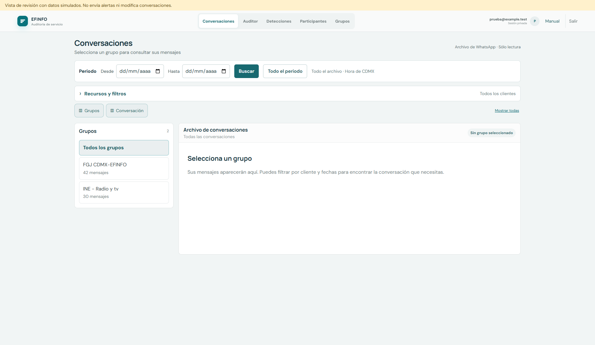
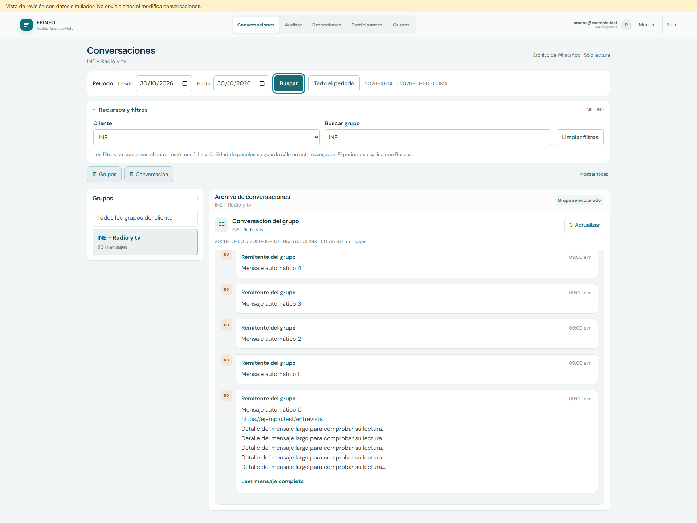

Interfaz ajustada a la guía de diseño
Periodo siempre visible con Buscar. Recursos y filtros cerrado al entrar. Lista y conversación aprovechan el espacio disponible. Los filtros y la selección se conservan al consultar detalles.
Estas capturas contienen datos simulados. Son vistas de revisión, no registros de clientes ni evidencia de atención real. La aplicación enlazada conserva su acceso privado.
Entrada con recursos cerrados

Recursos abiertos y conversación seleccionada

Comprobaciones realizadas
- Recorrido con filtros, búsqueda por periodo, selección, lectura y evidencias.
- Recursos operables con teclado y controles táctiles de al menos 44 píxeles.
- Vistas de escritorio, iPad en 1024 y 768 píxeles y móvil en 390 píxeles sin desbordamiento horizontal.
- Se conservan las reglas de negocio, los permisos y las asignaciones existentes.
Pendiente: revisión de Juan y Juanri con tareas reales y un iPad físico. Las pruebas de interfaz no sustituyen esa revisión ni acreditan la calidad de las respuestas de IA.